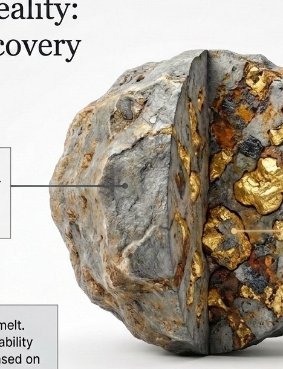

Раздел для тех, кто хочет понять техническую сторону вопроса, прежде чем передавать данные.

Маршрут переработки шлака силикомарганца. Пройдена инженерная часть:
Маршрут проработан — это инженерная часть, и она пройдена. Лабораторная верификация — следующий шаг в том же маршруте, а не признак того, что работа не начата.
Подтверждённые данные о материале появляются только после испытаний. До испытаний содержание металла, гранулометрия и извлечение остаются предположением. Мы называем это прямо, а не оставляем на потом.
Для материалов, отличных от шлака силикомарганца — феррохром, ферросилиций, шлаки электросталеплавильного производства, шламы и другие — маршрут требует адаптации и отдельного лабораторного подтверждения на конкретном материале.
Заводская лаборатория обычно настроена на контроль плавки. Раскрытие сростков металла, индексы дробимости и абразивности, магнитный отклик по классам крупности — это задачи обогатительной лаборатории, оборудования для которых на заводе обычно нет.
Что именно ваша лаборатория может выполнить, а что нет — определяется программой испытаний под конкретный материал. Мы составляем этот перечень явно, до начала работ.
Своей лаборатории у нас нет. Испытания выполняет независимая лаборатория по программе, которую мы составляем. При необходимости испытания может провести и лаборатория предприятия — по той же программе, в пределах её возможностей.
Пришлите данные — начнём с оценки.
Отправить данные о материале